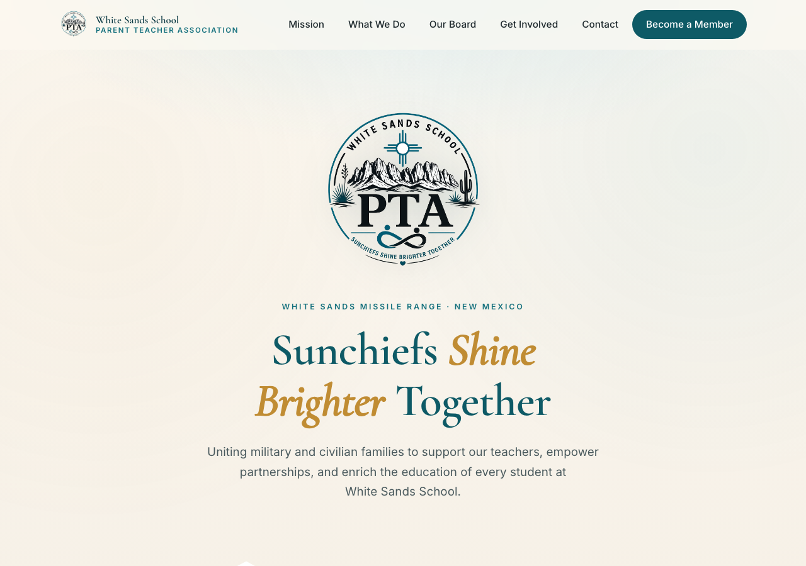

Artifact 02 · Web & Communication
White Sands PTA Website
An accessible, audience-focused website for a nonprofit parent–teacher association, translating a community's mission into clear, welcoming design.

A welcome mat for a whole community
A parent–teacher association at a military installation serves a constantly changing mix of military and civilian families. The organization needed a website that felt welcoming to newcomers, credible to donors and partners, and clear about how to get involved, all without a technical audience in mind.
My job wasn't to show off code. It was to understand the audience and the organization's mission, then make both easy to grasp in a few seconds of scrolling.
Design decisions in service of people
A clear brand and voice
I built the site around the community's identity: a consistent palette, a warm slogan, and a friendly-but-trustworthy tone that helps every family feel they belong.
Accessibility from the start
Skip links, semantic landmarks, descriptive alt text, keyboard support, and high color contrast, so the site works for everyone, including families using assistive technology.
An obvious path to act
Clear calls to action ("Become a Member," "Get Involved") and a simple contact section remove friction for busy parents who have a minute, not an afternoon.
Credibility built in
Transparent organization details and structured data help search engines and donors verify the nonprofit: small touches that build real trust.
What I learned
Start with the audience, not the features
My instinct as a builder is to jump to how. This project taught me to start with who and why. Once I pictured a new military spouse landing on the page for the first time, every design choice got easier: what to say first, what to cut, and how to make the next step obvious. That audience-first habit is the heart of technical communication.
Accessibility is a form of respect
Treating accessibility as a first-class requirement, not a cleanup task, changed how I built. Meaningful headings, alt text, and strong contrast aren't just compliance; they're a way of saying every family is welcome here. I now design that way by default.
Visual design communicates before words do
Spacing, color, and hierarchy set a tone in the first second, long before anyone reads a sentence. Learning to use white space and contrast deliberately taught me that design is communication, and that clarity and warmth can coexist.
This artifact shows I can take an organization's mission and an unfamiliar, non-technical audience and produce something clear, accessible, and trustworthy. That's exactly the skill set a team wants in someone who will write documentation, design interfaces, or represent technical work to the people who depend on it.